Ingest CycloneDX
Preserve component identities and declared dependency edges while assembling SBOM content into JSON-LD and RDF.
CycloneDX JSONImport CycloneDX SBOMs, enrich packages with complete OSV advisories, and explore applications, vulnerabilities, fixes, evidence, and dependency paths from one Apache Jena knowledge graph.
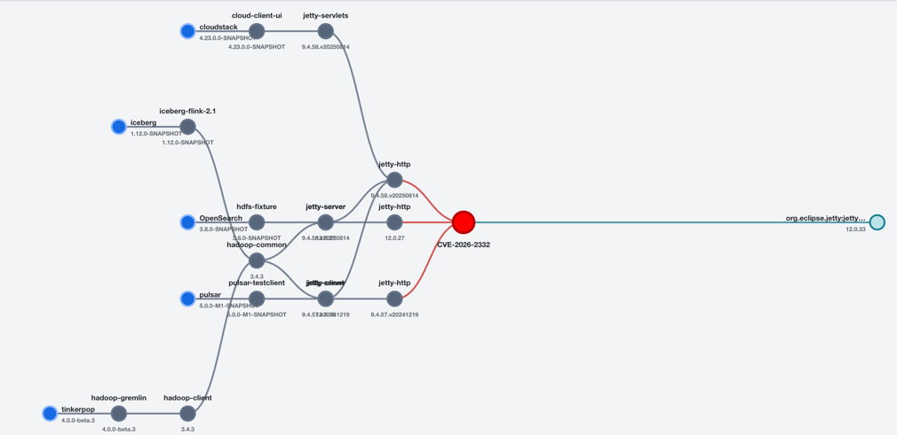
What it does
Ingestion and enrichment write RDF. Explore, SPARQL, CVE Impact, and AI Workbench read the persisted model without hidden OSV calls.
Preserve component identities and declared dependency edges while assembling SBOM content into JSON-LD and RDF.
CycloneDX JSONBatch-query installed PURLs, load complete advisories, and connect affected package occurrences to normalized vulnerability resources.
Explicit writesCenter a CVE between impacted application paths and provided fixes, with merged nodes and animated exposure highlighting.
D3 + SVGParse version-specific vectors into calculated severity, scores, and clean metric tables instead of displaying an opaque vector alone.
V2 · V3 · V3.1 · V4Run read-only SPARQL SELECT queries with presets, formatting, tabular results, CSV export, and direct access to RDF relationships.
SPARQL + ARQBuild typed advisory chunks, generate local BGE embeddings, and inspect the exact semantic evidence used by Buggy.
Grounded retrievalProduct tour
Upload a CycloneDX JSON document, follow ingestion progress, and see application, package, dependency-edge, statement, and graph-node totals from the persisted model.
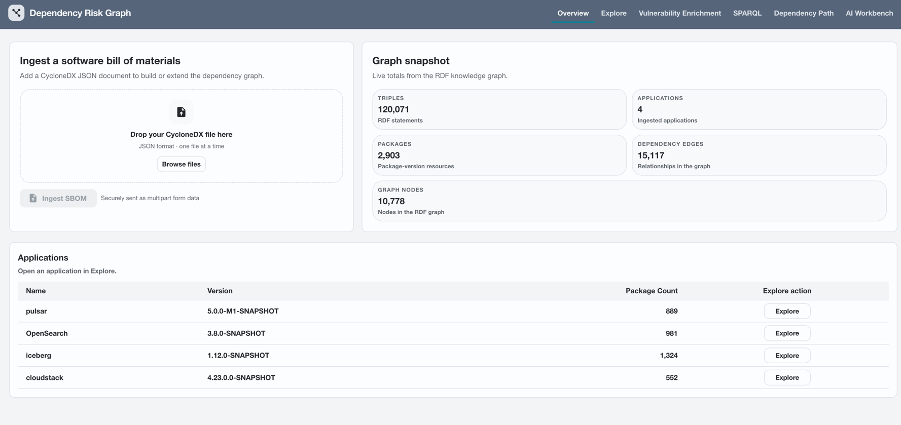
Review direct and transitive dependencies, graph size, vulnerable packages, and vulnerability totals for the selected application.
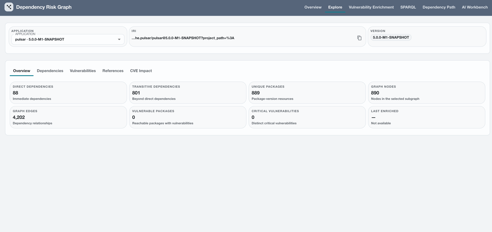
Separate direct packages from transitive packages and inspect the immediate graph context of each installed dependency.
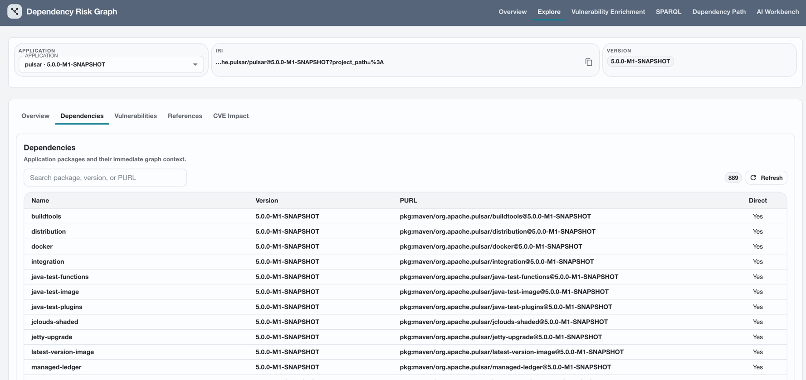
Join installed packages to normalized OSV advisories, then open the complete advisory content, affected versions, fixes, CVSS data, timestamps, and references.
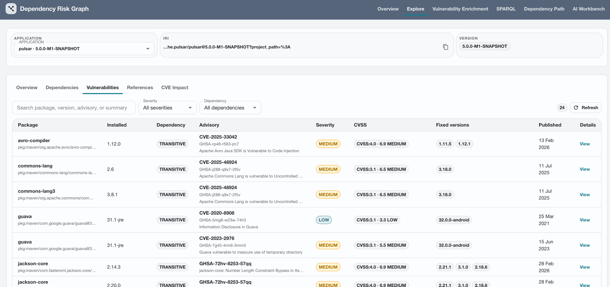
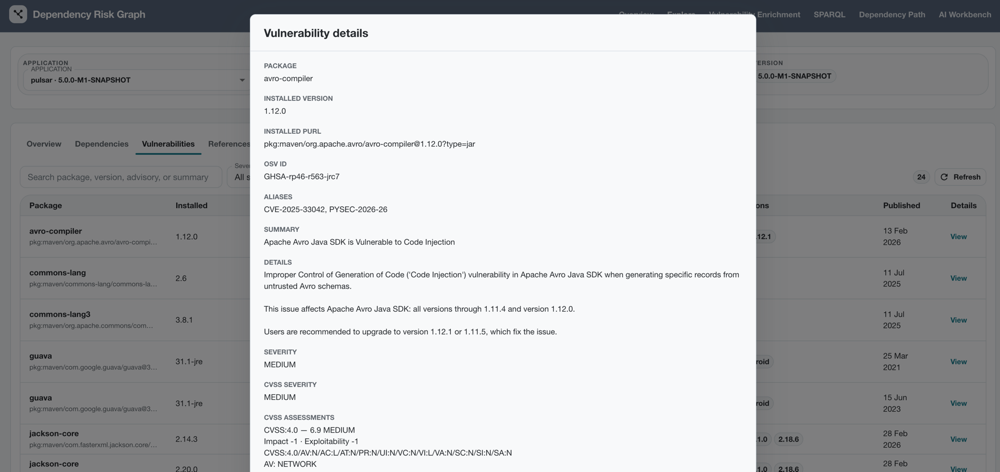
References remain dedicated graph resources and are grouped by advisory alongside the installed package versions they describe.
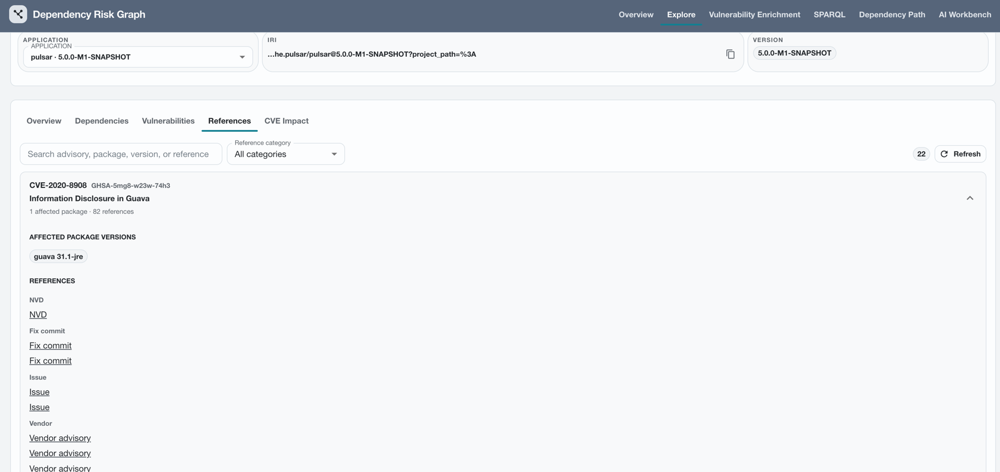
Group one vulnerability across applications, center it between impacted dependency paths and provided fixes, and open focused node or advisory detail without losing context.
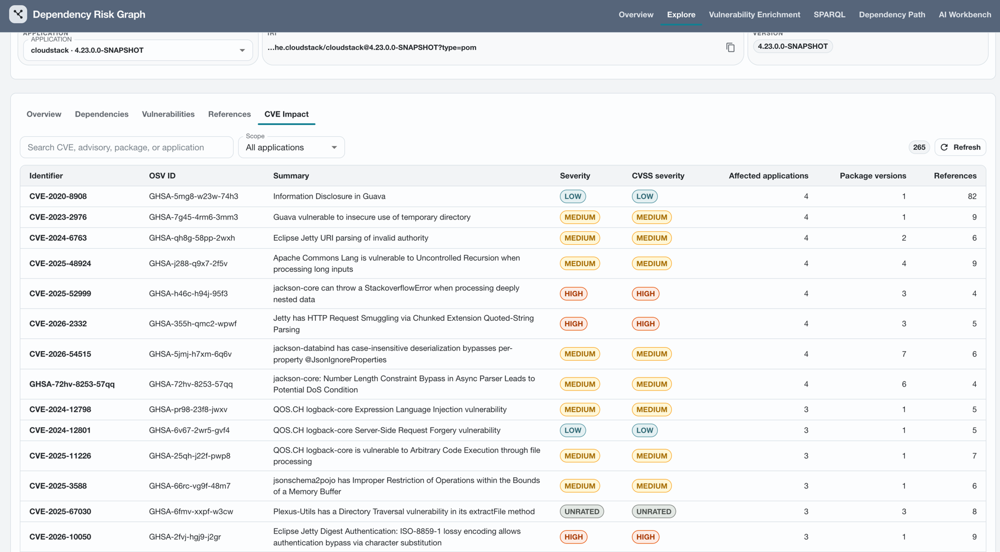
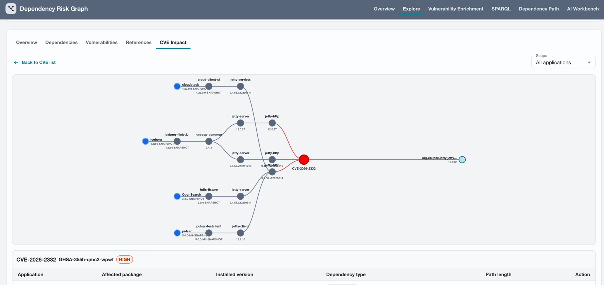
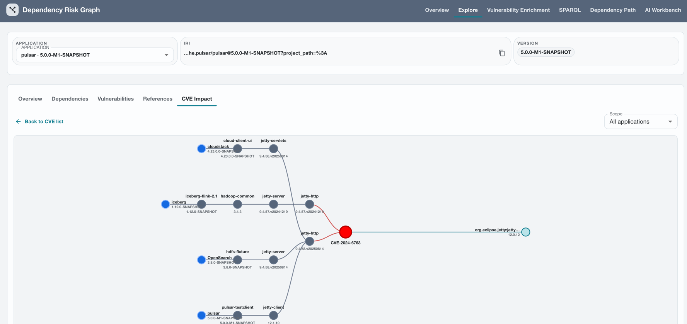
Run read-only SPARQL queries to inspect graph relationships, validate the RDF model, and export custom results.
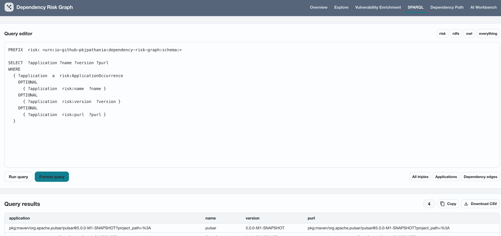
Review Buggy's summary beside ranked advisory chunks, source identifiers, similarity scores, and complete evidence text.
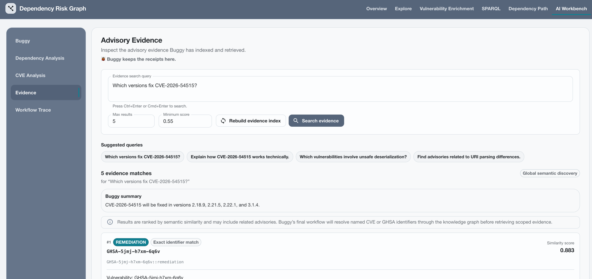
Current architecture
CycloneDX and OSV use separate assembly pipelines, then meet in the same embedded TDB2 graph. Every exploration surface reads that shared model.
No second vulnerability database is maintained for Explore.
Opening an application never silently invokes OSV enrichment.
Application views follow persisted dependency relationships from the selected occurrence.
Semantic matches retain their source text, type, identifier, and score.
Quick start
The Maven build installs the configured frontend toolchain and bundles the static application into the Spring Boot JAR.
# Build backend and frontend
$ ./mvnw clean package
# Start the application
$ java -jar target/dependency-risk-graph-0.0.1-SNAPSHOT.jar
# Open the application
→ http://localhost:8080Next steps
The roadmap follows the project README and keeps implementation status visible.
Fix remaining build issues and keep backend and frontend builds stable.
Complete and validate deterministic dependency-path discovery and visualization.
Add graph-grounded retrieval for CVE, application, dependency-path, and remediation context.